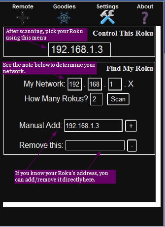
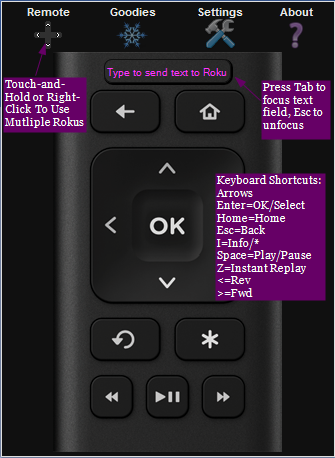

Remoku - A Web App for Remote Control of Roku Players
Copyright 2012-2023
A. Cassidy Napoli
. All rights reserved,
licensed under the Simplified BSD License Terms.
What it does
-
Will discover and control Rokus on a local network, configures itself with minimal user input
-
Supports all features found on the newer Roku remotes, except game remote functions (motion, A and B)
-
Supports direct text entry
-
Supports mobile and desktop browsers
-
On devices with keyboards, keyboard shortcuts are available, see step 3 below for reference
-
Works on recent versions of most major browsers
Requirements
-
Just an up-to-date browser!
Getting Started
-
Browse to remoku.tv.
-
The first time you use Remoku you'll need to scan for Rokus, or manually add one in Settings before you can use the remote:

-
After setup, you can start using the remote by clicking on the remote icon and using the image below for reference:
